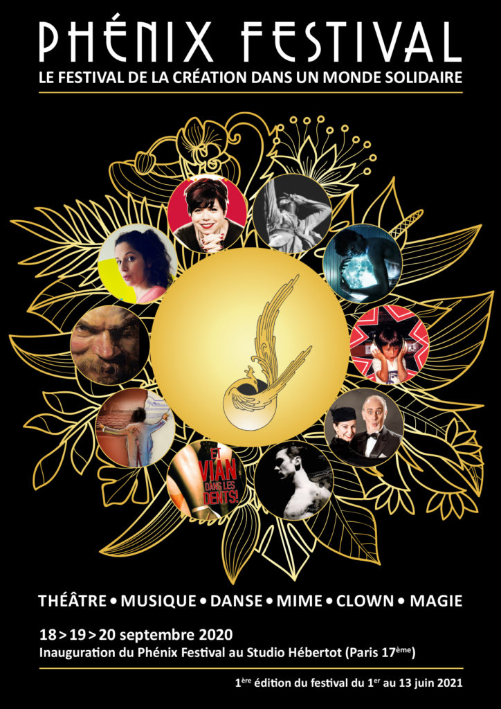

Le Phénix Festival
★★☆☆
Issu du processus de décentralisation culturelle proposée par le ministère de la culture dès les années 1960, le phénix est aidé par l'État (ministère de la Culture représenté par la direction régionale des affaires culturelles) et les collectivités locales (Ville ou leur regroupement, Département, Région).
Festival La Gacilly
★★☆☆
Créé en 2004, le Festival Photo La Gacilly métamorphose chaque été le petit village breton en une immense galerie de plein air. A travers une expérience immersive et déambulatoire, le meilleur de la création photo contemporaine est présenté, en couleurs ou en noir et blanc.
Le voyage à Nantes
★★☆☆
Chaque été depuis 2012, le Voyage à Nantes met en scène la cité des Ducs de Bretagne en multipliant les propositions culturelles, gratuites. Durant deux mois, artistes, architectes, designers et jardiniers tissent des connivences et font infuser l’art dans toute la ville.
Toutankhamon
★★☆☆
Une exposition pédagogique pour toute la famille.
Dans le très beau cadre de la Sucrière, l’exposition Toutankhamon met
en lumière la vie du jeune pharaon qui monte sur le trône à 6 ans et meurt à 18 ans.
L’Industrie magnifique
★★☆☆
Une entreprise, un artiste, une collaboration et, in fine, une œuvre d’art, originale et monumentale, exposée sur la place publique… Tel est le beau projet de l’Industrie Magnifique, un mouvement né à Strasbourg, en Alsace, en 2016. Tous les deux ans.

La région Grand-Est
★★☆☆
Je dois l’avouer, ce nom ne me disait rien... mais il s’avère que cette région a vu le jour assez récemment, le 1er janvier 2016, en rassemblant trois régions : l’Alsace, la Champagne-Ardenne et la Lorraine, au nord-est de la France.
Marionnette
★★☆☆
“Rebetiko”, la musique et l’image pour dire l’exil et la nostalgie. Programmé le 18 novembre au Théâtre Halle Roublot et au Mouffetard – Théâtre de la Marionnette à Paris du 22 au 30 novembre, Rebetiko de la compagnie Anima Théâtre est un spectacle de marionnettes et projections holographiques.
Jardin des Tuileries
★★☆☆
« Hors Les Murs », extension de la foire d’art contemporain Paris+ Art Basel qui se tient au Grand Palais éphémère du 19 au 23 octobre, propose une exposition unique d’œuvres iconiques dans quatre lieux cultes de la capitale, dont le Jardin des Tuileries.
le « off » indispensable
★★☆☆
Alors que son directeur depuis 2016, Clément Delépine, est parti pour coordonner Paris +, Paris Internationale se recentre dans un extraordinaire immeuble en chantier en face de l’Olympia, 35 bd des Capucines. Sur 4 étages (avec un sous-sol riche d’un ambitieux programme de rencontres).
AKAA
★★☆☆
AKAA ouvre sa 7ème édition ! Placée sous le thème du mouvement, la foire d’art et de design contemporain a une nouvelle fois réussie à convaincre le public du Carreau du Temple grâce à la qualité de sa sélection.

Paris Design Week
★★☆☆
Jusqu’au 12 septembre, la Paris Design Week fête ses 10 ans dans trois quartiers iconiques de Paris : Opéra/Concorde/Étoile.
MIYU
★★☆☆
La Galerie Miyu est la première galerie physique dédiée aux arts et aux techniques de l’animation dans le monde et se veut une passerelle entre artistes de l’animation et artistes contemporains.